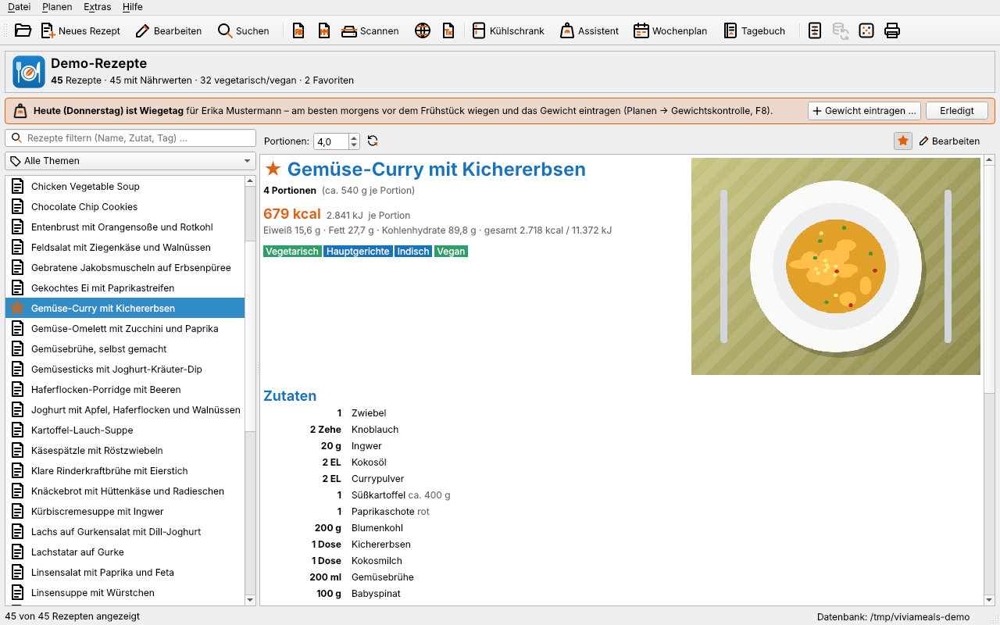

Willkommen bei ViviaMeals
ViviaMeals ist eine Rezeptverwaltung für den eigenen Rechner. Sie sammelt Ihre Rezepte in einer übersichtlichen Datenbank, rechnet englische Maße in deutsche Küchenmaße um, ermittelt aus den Zutaten automatisch Kalorien und Nährwerte und hilft bei der Planung: Was koche ich mit dem, was im Kühlschrank liegt? Wie sieht eine Woche aus, die zu meinem Kalorienziel passt? Welches Menü passt für Gäste?

Was ViviaMeals kann
- Rezepte verwalten – anlegen, bearbeiten, mit Foto, Tags und Quelle versehen, suchen, drucken (Rezepte anlegen und bearbeiten).
- Rezepte übernehmen – Sammlungen im RezKonv- und MealMaster-Format importieren, englische Rezepte umrechnen und übersetzen, gedruckte Rezepte einscannen (Rezepte importieren, Rezepte scannen).
- Nährwerte – Energie (kcal und kJ), Fett, Kohlenhydrate, Zucker, Ballaststoffe, Eiweiß und Salz je Rezept und Portion, mit eigener Nährwerttabelle (Nährwerte).
- Planen – Kühlschrank-Vorschläge mit Einkaufsliste, Assistent für Gewichtsverlust und Gewichtszunahme, Wochenmenü-Plan, Ernährungstagebuch (Planen und Gewichtskontrolle).
- Menüs – Menüs mit drei bis fünf Gängen zusammenstellen und als Menükarte drucken (Der Menüassistent).
- Exportieren – als Website zum Hochladen, als LaTeX-Kochbuch, als LibreOffice-Writer-Dokument oder als Rezeptpaket zum Weitergeben (Exportieren).
- Abgleichen – dieselbe Datenbank auf mehreren Geräten über die eigene Website oder das lokale Netz (Abgleich zwischen Geräten).
Kein Medizinprodukt. ViviaMeals ist eine persönliche Rezept- und Ernährungsverwaltung. Nährwerte, Energiebedarf und Wochenpläne sind Schätzwerte aus allgemeinen Tabellen und Formeln. Sie ersetzen keine ärztliche oder Ernährungsberatung. Wer abnehmen oder zunehmen möchte und gesundheitliche Beschwerden hat, sollte das vorher mit Arzt oder Ärztin besprechen.
Installation
Windows
ViviaMeals-<Version>-Setup.exestarten.- Lizenz und Hinweis „kein Medizinprodukt“ annehmen.
- Zielordner bestätigen (Vorgabe
C:\ViviaMeals). - Am Ende „ViviaMeals starten“ angekreuzt lassen.
Der Installer legt im Startmenü ViviaMeals, ViviaMeals – Demo, ViviaMeals – Handbuch und ViviaMeals aktualisieren oder entfernen an, dazu eine Verknüpfung auf dem Desktop. Rezeptdateien (.vmr), Datenbanken (viviameals.vmdb) und Rezeptpakete (.vmpack) öffnen sich danach per Doppelklick in ViviaMeals.
Aktualisieren: einfach den neueren Installer starten. Er entfernt nach Rückfrage die alte Fassung und installiert die neue in denselben Ordner. Ihre Rezepte, Profile, Tagebücher und Einstellungen bleiben dabei erhalten – sie liegen nicht im Programmordner.
Linux und macOS
ViviaMeals wird aus dem Quelltext gebaut (Qt 6.4 oder neuer bzw. Qt 5.15):
qmake6 ViviaMeals.pro
make
sudo make install # optional: Programm und Handbuch nach /usr/localFür die Texterkennung beim Scannen braucht es zusätzlich Tesseract (siehe Was man zum Scannen braucht).
Der erste Start
Beim ersten Start gibt es noch keine Rezeptdatenbank. ViviaMeals begrüßt Sie mit einem Fenster und bietet an:
- Neue Datenbank anlegen – einen leeren Ordner wählen und einen Namen vergeben, z. B. „Meine Rezepte“.
- Mit Beispielrezepten anlegen – wie oben, aber gleich mit einigen Dutzend Beispielrezepten zum Ausprobieren.
- Vorhandene öffnen – eine schon bestehende ViviaMeals-Datenbank öffnen (z. B. von einer Sicherung).
- Aus dem Abgleich laden – eine Datenbank, die auf einem anderen Gerät schon abgeglichen wird, auf dieses Gerät holen (Neue Installation einrichten).
Bei jedem weiteren Start öffnet ViviaMeals die zuletzt benutzte Datenbank und zeigt ein zufällig ausgewähltes Rezept – vielleicht eine Anregung für heute.
Tipp: Die Demo (Startmenü „ViviaMeals – Demo“ bzw.
ViviaMeals --demo) startet mit Beispielrezepten, Fotos und einem Beispielprofil in einem eigenen, vorübergehenden Bereich. Ihre eigenen Daten werden dabei nicht berührt – ideal, um alles gefahrlos auszuprobieren.
Über dieses Handbuch
Menübefehle sind kursiv gesetzt, mit Pfeilen für Untermenüs: Datei → Export → Menüassistent …. Schaltflächen und Feldnamen stehen fett. Tastenkürzel werden wie Strg+Umschalt+M geschrieben; unter macOS entspricht Strg der Befehlstaste ⌘.
Das Handbuch öffnen Sie in ViviaMeals jederzeit mit F1 oder Hilfe → Handbuch. Es liegt in drei Formen vor: als Windows-Hilfedatei (.chm), als Webseiten (HTML) und als PDF zum Drucken.